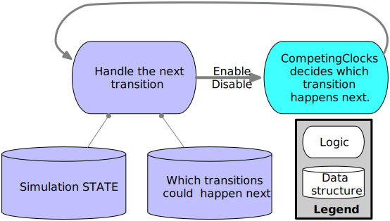

CompetingClocks
CompetingClocks is a Julia library that samples distributions for discrete event systems (DES) in continuous time. It supports Exponential and non-Exponential distributions for events.
Overview
Many kinds of discrete event simulations need an efficient way to choose the next event in a simulation.
- Simulations of chemical reactions.
- Queueing theory models of networks, production, and computation.
- Epidemiological models of disease spread among individuals.
- Vector-addition systems.
- Generalized stochastic Petri nets.
- Generalized semi-Markov Processes.
This library supports these kinds of simulations by optimizing the choice of the next event in the system. In statistical terms, this library is a sampler for generalized semi-Markov processes.

The background work for this library comes from Continuous-time, discrete-event simulation from counting processes, by Andrew Dolgert, 2016.
Usage
The library provides you with samplers. Each sampler has the same interface. Here, a distribution is a Distributions.ContinuousUnivariateDistribution, RNG is a random number generator, the key is some identifier (maybe an integer) for the event, and an enabling time is a zero-time for the given distribution.
enable!
(sampler, key, distribution, enabling time, current time, RNG))- to start the clock on when an event will fire next.disable!
(sampler, key, current time)- to turn off an event so it can't fire.next
(sampler, current time, RNG)- to ask this library who fires next.
Different samplers are specialized for sampling more quickly and accurately for different applications. For instance, some applications have very few events enabled at once, while some have many. Some applications use only exponentially-distributed events, while some have a mix of distribution types. Because continuous-time discrete event systems can fire many events, the literature has focused on reducing the number of CPU instructions required to sample each event, and this library reflects that focus.
Why Use This?
If I make a quick simulation for myself, I sample distributions the moment an event is enabled and store the firing times in a priority queue. When would I switch to this library?
I want to evaluate the effect of changing simulation parameters by comparing multiple runs with common random numbers.
I'm looking at rare events, so I want to use splitting techniques and importance sampling.
Performance matters (which it often doesn't), so I would like to try different samplers on my problem.
I want to focus on developing and testing my model not my simulation algorithm; CompetingClocks is designed and tested with care to ensure correctness.